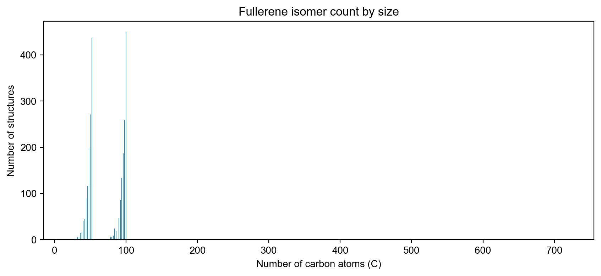
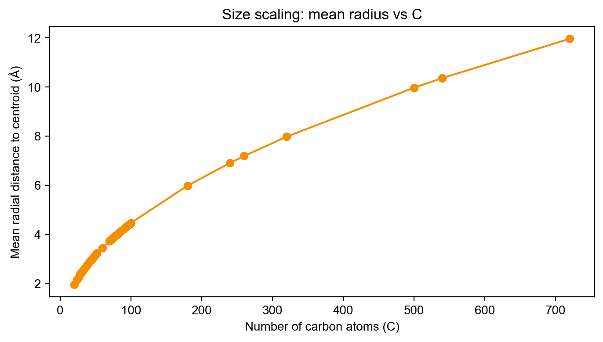
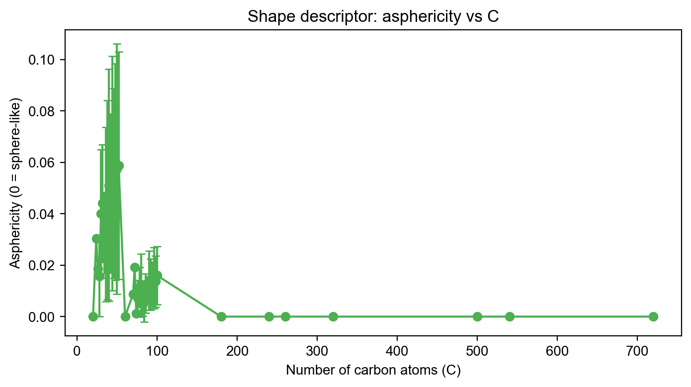
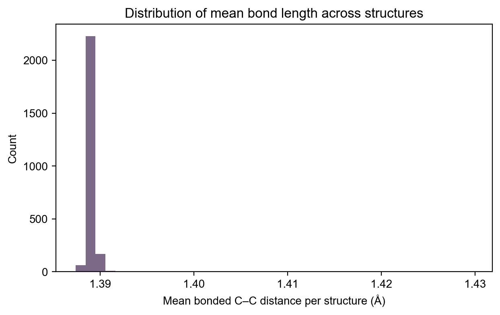

| C | # structures | Mean radius (Å) | Mean asphericity |
|---|---|---|---|
| C100 | 450 | 4.460 | 0.0160 |
| C52 | 437 | 3.226 | 0.0587 |
| C50 | 271 | 3.163 | 0.0574 |
| C98 | 259 | 4.414 | 0.0137 |
| C48 | 199 | 3.097 | 0.0562 |
| C96 | 187 | 4.371 | 0.0150 |
| C94 | 134 | 4.322 | 0.0127 |
| C46 | 116 | 3.029 | 0.0518 |
| C44 | 89 | 2.964 | 0.0557 |
| C92 | 86 | 4.276 | 0.0126 |




structures.csv: per-structure metrics and sanity checksby_C.csv: per-C aggregated statisticsstructures.csv to select diverse seeds by size, radius, and asphericity; then add expensive labels (DFT/ML energies) via active learning.